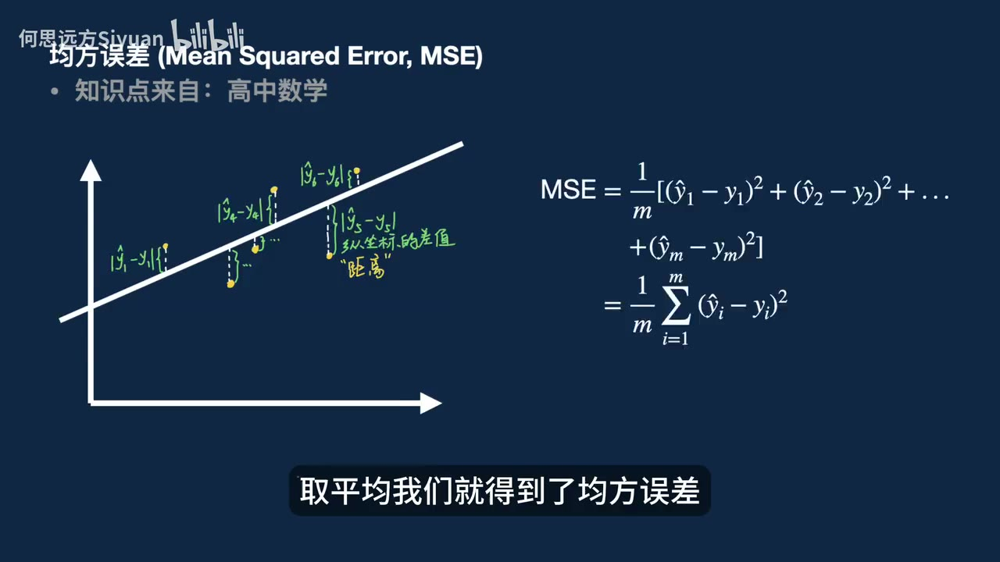

原视频 · 在线回看
点击后联网加载 B 站播放器；本地不下载整段视频。

原视频 · 在线回看
点击后联网加载 B 站播放器；本地不下载整段视频。
UP 主： 何思远方Siyuan 时长： 19 分 58 秒 链接： https://www.bilibili.com/video/BV1NKaV6bE7a/ 阅读强度： deep
把一百张脸的照片对齐，再把每个像素的颜色取平均，会得到一张融合后的脸。这个例子里，十张脸的平均结果看起来比三张脸的平均结果更接近常见审美，也被拿来和原始人脸比较。这个过程给我们一个直观入口：当许多个样本被压成一个代表值时，突出的差异会怎样变化？何思远方接下来用机器学习里的两种池化操作，把这个问题连到 AI 训练、内容平台和人的生活选择上。
池化可以先理解为“用较少的信息代表一组信息”。均值池化把一组数字加起来，再除以数字个数；最大值池化只留下其中最大的数字。比如一组脸部像素中，每张照片某一处的颜色稍有不同，逐点取平均会把差异融合成较中间的结果；取最大值则只保留某个维度上最突出的值。前一种做法留下整体趋势，后一种突出局部峰值。讲者把两者当作后续讨论的主轴：平均值容易让不同样本靠拢，挑最大值则更可能保留极端表现。
机器学习也会用一个整体目标来衡量模型表现。先从一条回归线看：我们有若干样本点，计算每个点离回归线的垂直距离，把距离平方后求平均，就得到均方误差。这个数字概括了整条线对这组数据拟合得如何。某些点离线很远时，平方会让它们的误差变得更大，梯度下降则可以逐步调整线的位置，尝试降低总误差。讲者把模型训练的损失平均与这一步联系起来：优化时关注的，是模型对一批样本的总体误差。
用这条线来理解模型，不代表神经网络真的只对每个像素做一次平均。训练目标、模型结构和样本权重都会影响特定样本的作用，少数样本也可能因为误差大或被特别加权而影响结果。这里的核心比喻是：当训练目标汇总许多样本时，模型会朝能兼顾整体表现的方向调整，个别样本的独特需求可能在整体方向中变得不显眼。这有助于理解“平均化”的风险，但不能用它概括所有模型训练细节。
讲者进一步把学习比作压缩：如果模型把见过的每个样本原样记住，它就像一个庞大的检索库；如果能从大量例子中抓住共同规律，就能用较少的内部表示处理新问题。压缩会省去细节，也可能把一些有价值的少数情况一起压掉。我们可以把这理解为“用规律换取泛化”：记忆某个答案，未必能帮助解决相邻的新问题；学习相似任务背后的结构，才可能让模型处理更多情况。这里的“压缩”是帮助理解训练目标的比喻，不是完整的模型实现说明。
为了说明如何优化一组答案，讲者用 GRPO 作了直观解释：面对同一个问题，模型生成若干答案，分别打分，再用这组答案的平均分作参照。高于平均的答案会得到鼓励，低于平均的答案会被压低概率；反复处理许多问题后，目标是提高整体表现。这种讲法聚焦于“相对组平均水平调整答案”，并未展开具体公式和算法实现。它与均值池化的关联在于，反馈围绕一组答案的整体水平展开。
接下来，他介绍一种追求单个难题高表现的训练路线 TTT-Discover，并提到 2026 年初由斯坦福、英伟达等机构合作发布的研究。目标是在数学问题、GPU kernel 优化和单细胞分析等任务里找到出色解；他转述研究称 GPU kernel 快近两倍，单细胞分析指标高约 7%。视频没有展开基准的具体任务和比较设置，因此这些结果应按对应实验场景理解。
按讲者的说明，追求单题极致可能带来专门化：模型在特定问题上表现很强，换到其他题目时通用性可能下降。与按组内相对表现优化的 GRPO 对照，TTT-Discover 代表更激进的单点优化。前者适合需要广泛适用的模型，后者可能适合解决一项高度专门的科学问题。讲者进一步推测，照顾多数问题的折中可能让回答看似合理却不可靠；这是他从两种训练目标延伸出的判断。
模型被用来回答问卷、模拟不同人群意见时，平均化问题就从模型性能转向“它能不能代表真实的人”。讲者介绍一项使用 ANES 2020 全国性调查作参照的研究，称模型面对不同角色设定和社会议题时，给出的观点比真实受访者更单一，也容易把某个主流观点误当成各个子群体的普遍意见，从而低估少数观点。这个发现对应一个具体问题：同一套模型生成出来的多个“不同人”，答案可能仍然过于相似。
他还提到一项发表于 Nature Machine Intelligence 的研究，称研究比较了四个大模型、十六个人口群体和 3,200 名真人参与者，发现用模型代替人类参与者时，群体观点的代表性可能被扭曲、拉平。这项研究的设置与衡量方法会影响结论适用范围；它聚焦模型模拟群体意见，不能直接说明个人日常使用聊天机器人会怎样改变思想。
讲者担心人们越来越习惯让 AI 代替自己组织答案，也担心网络上的 AI 内容会超过人类创作。他提到 2025 年 11 月网上 AI 生成内容数量首次超过人类内容，但没有交代如何定义“内容”、统计哪些平台或怎样计数，因此这个比较需要另行核对。对个人来说，值得留意的实际变化是：遇到问题时，我们是否总是先要一个能覆盖多数人的通用回答，而较少继续追问自己的处境、价值取舍和经验差别？
为了说明“平均化”如何进入互联网平台，讲者借用科里·多克托罗关于平台逐步劣化的阶段模型。第一阶段，平台用好的产品体验吸引用户；第二阶段，用户被留住后，平台把更多价值转向广告主和商家；第三阶段，平台进一步压缩商业客户的利益，让更多价值流向平台本身。这个模型用来观察平台激励如何变化，并非对每个平台发展过程的逐项事实描述。用户被锁定后，平台对不同对象的重视顺序可能改变：一开始先改善体验来吸引人，之后更多资源服务于付费客户，最后连商业客户也要承受平台的价值提取。讲者用这个过程说明，平台追求稳定变现时，用户体验、商家收益和平台收入之间会出现新的张力。
在这种逻辑下，平台更愿意经营可预测、容易稳定变现的多数。它会优先展示能吸引大量用户的内容，而少数群体的需求可能逐渐失去可见度。讲者举了两个身边常见的例子：网红脸和爆款视频被反复模仿，各地古城里卖的商品和建筑风格也越来越相似。推荐算法能让地方特色内容被更多人发现，给地方创作者和商家带来机会；同一套反馈也会让创作者模仿已验证的样式，推动内容变得相似。平台扩大触达和压缩差异可以同时发生。
统计中把许多个体合并，常会形成总体均值、主流意见或“最佳实践”。这些总体概括有助于快速决策，但人的价值也可能藏在分布边缘：一个地方独有的习惯，一种不流行的审美，或一个不按主流路径选择的人生，都很难被“多数都喜欢”的标准完整代表。讲者所担忧的，是平均值成为默认价值标准后，差异较大的事物更容易被忽略或淘汰。这里的模型训练与平台商业化是不同层面的过程：前者通过损失目标调整模型，后者受用户、广告主、商家和平台之间的经济关系影响。把两者放在一起，是为了看见它们都可能偏向总体表现或多数需求，不能把比喻当成相同的因果机制。
他用住在上海繁华地段的经历，解释了这种可预测刺激为什么会让人疲惫。下班后，他会和女朋友去商场寻找新鲜感；逛过几次后，即使商场很好，也容易腻，因为购物、餐饮和娱乐提供的刺激种类有限，又容易预料。讲者由此想到，当日常刺激变得相似，人可能会继续追逐更高的社会成就，期待阶层变化能带来新鲜感。他把这看作生活目标越来越单一的表现。这是他的个人反思，不能据此概括所有城市生活或所有追求成功的人。
谈到 AI 会不会替代人，讲者把兴趣和天赋看作一个人的长期优势：如果喜欢自己做的事，可能学得更快，也更懂得把 AI 用进工作；如果只是在不感兴趣的行业谋生，岗位变化也可能促使自己转向更合适的方向。他很快承认，失业会让人焦虑，因为收入关系到生活。这是他从个人思考得出的鼓励，不构成对被裁员者的安慰保证；转行能否发生，还取决于经济缓冲、技能、岗位和家庭责任。
随后，他借用埃里希·弗洛姆对“恋尸癖”倾向的心理学讨论。在这个概念里，“恋尸癖”指向对机械、僵死、可控秩序的迷恋：人偏好重复、可预测、容易管理的东西。讲者把这种倾向与现代管理中用统一指标评价人联系起来，例如打卡、日报周报、鼓励熬夜，以及外卖平台按照总体安全概率和好评率管理骑手。总体指标容易计算，却难以照顾每位骑手当天遇到的个人状况。平台关注安全事故概率和总体好评率，骑手面对的则是一单一单具体的配送任务；总体数据可以帮助平台管理大规模订单，却很难说明某位骑手当下为什么匆忙、路线为何有困难，或个人选择受到了多大生计压力。讲者因此提醒，看到骑手的粗鲁行为时，不宜只把它归结为个人秉性，也应看到平台规则与谋生压力可能共同参与形成这种处境。
这种总量指标带来的距离，也会出现在普通人的职业生活里：大学二年级就开始实习、第一份工作必须干满一年、每个升学节点都被说成决定一生。每条规则都在催人向前，但当人生不断被拆成必须赢下的关卡，休息、转向和不同节奏就很容易被看成落后。讲者借连续出现的“小升初”“中考高考”“第一份工作”等节点追问：如果每一个阶段都被说成至关重要，我们是否还有机会判断当下真正想要什么？
讲者也用自己的跨学科经历反思这种单一评价。他说自己高考读文科，因为觉得数学有趣，后来做机器学习和 AI 算法；本科读过的社会学、哲学内容又帮助他批判性地看待算法。他同时感谢数学和人文教育，认为它们让自己看到更丰富的世界、建立审美并过更舒适的生活。这个经历说明个人走过的不同路径可能在后来汇合，早年的选择也不会只剩下升学或就业结果一种价值。
最后，讲者把“mean pooling”和“max pooling”转成两种生活比喻。Mean pooling 式的生活，总在问自己是否符合平均标准：什么时候成功、该在哪里工作、履历要走哪条最稳妥路线。Max pooling 式的生活，更关心一个具体的人能不能发展自己的兴趣、经验和个性。讲者强调个人差异和生命体验，并不要求每个人都赢得顶级成就；他希望人们别把自己只当成完成指标的工具。
他提到弗洛姆提出的对生命和人类的爱，以及走向个体化的道路，接着谈到“勇敢”。借用亚里士多德关于勇敢的讨论，讲者把勇敢理解为：知道离开既定关卡会付出代价，仍愿意依据理性和道德作选择。这里的“代价”可以是收入不稳定、暂时落后于同龄人，或被周围人误解；勇敢也不等于不看后果地冒进，而是知道自己在承担什么。
因此，max pooling 式的生活可以很具体：不必赶在三十岁前成功，不必把自己一生的价值压在第一份工作上；可以接触自然、旅行、探索兴趣，在重要关系里不把别人当工具，也不把自己当工具。讲者提出身体和闲暇同样值得珍惜，并用一个极端设想说明：如果六十岁时依然保有健康，也可能拥有许多别人忙于竞争时错过的闲适岁月。这是用来挑战“年轻时必须不断冲刺”的假设，不是健康结果的保证。
回到最初那一百张平均脸，平均结果看起来更接近多数人认可的审美，却无法替代每张脸独有的细节。AI 模型和内容平台需要汇总大量材料，个人生活也会遇到统计指标与社会关卡；讲者希望我们在借助这些工具和规则时，仍保留独立判断与个人经验。一个人不必成为科学前沿上唯一的伟大解，也可以在回应自己的生活挑战时，找到属于自己的方向。
均值优化让模型和平台更容易照顾广泛用户，也可能让少数样本、观点和生活路径变得不显眼。何思远方从 GRPO 与单题优化谈到问卷模拟、推荐平台和城市生活，最后提出保留个体差异、按理性和价值选择生活。训练类比、研究结果与平台激励处于不同层面，阅读时要分清它们各自说明什么。